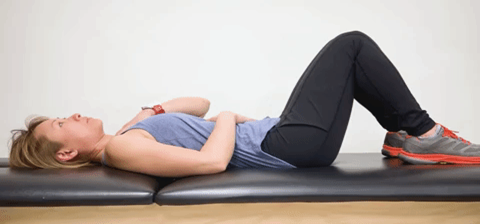
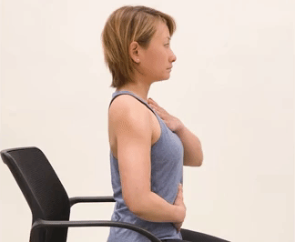
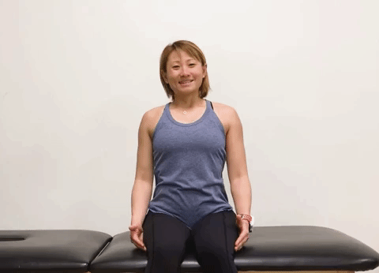
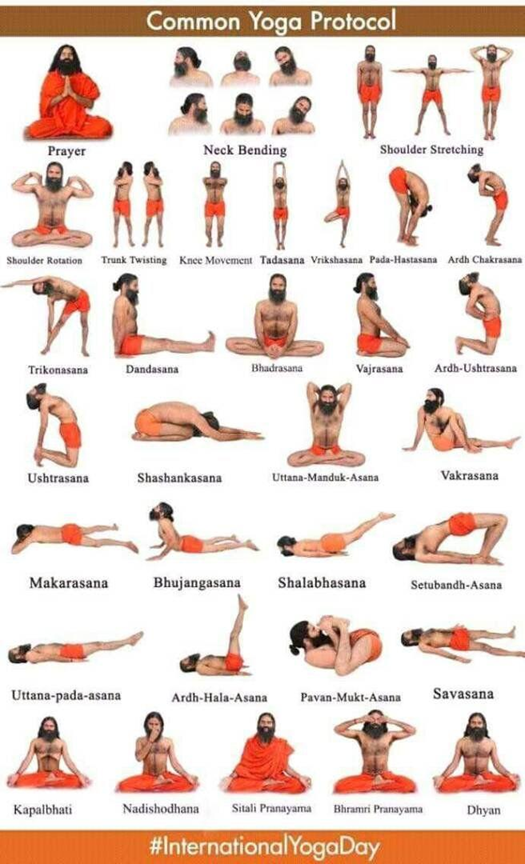

handpicked exercises to recover from covid to jump back in your daily routine.
Deep Breathing while on your back
Lie on your back and bend your knees so that the bottom of your feet are resting on the bed.
Place your hands on top of your stomach or wrap them around the sides of your stomach.
Close your lips and place your tongue on the roof of your mouth.
Breathe in through the nose and pull air down into your stomach where your hands are. Try to spread your fingers apart with your breath.
Slowly exhale your breath through the nose.
Repeat deep breaths for one minute.

Deep Breathing While on Your Stomach
Lie on your stomach and rest your head on your hands to allow room to breathe.
Close your lips and place your tongue on the roof of your mouth.
Breathe in through your nose and pull air down into your stomach. Try to focus on your stomach pushing into the mattress as you breathe.
Slowly exhale your breath through the nose.
Repeat deep breaths for one minute.
Deep Breathing While Sitting
Sit upright on the edge of a bed or in a sturdy chair.
Place your hands around the sides of your stomach.
Close lips and place your tongue on the roof of your mouth.
Breathe in through your nose and pull air down into your stomach where your hands are. Try to spread your fingers apart with your breath.
Slowly exhale your breath through the nose.
Repeat deep breaths for one minute.

Yawn to smile
This exercise incorporates motion with deep breathing, which helps increase coordination and build strength in the arms and shoulders. It also opens up the muscles in your chest to give the diaphragm space to expand.
Sit upright on the edge of your bed or in a sturdy chair.
Reach arms overhead and create a big stretching yawn.
Bring your arms down and finish by smiling for three seconds.
Repeat for one minute.

Common yoga protocols

Precautions
Clean your hands often
Cough or sneeze in your bent elbow - not your hands!
Avoid touching your eyes, nose and mouth
Limit social gatherings and time spent in crowded places
Avoid close contact with someone who is sick
Clean and disinfect frequently touched objects and surfaces.
Watch for symptoms
The symptoms of infection for the coronavirus are often similar to those of other respiratory virus infections, such as influenza. Symptoms can include:
.png)